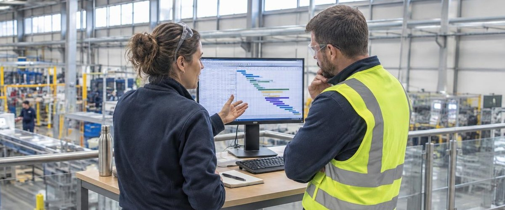
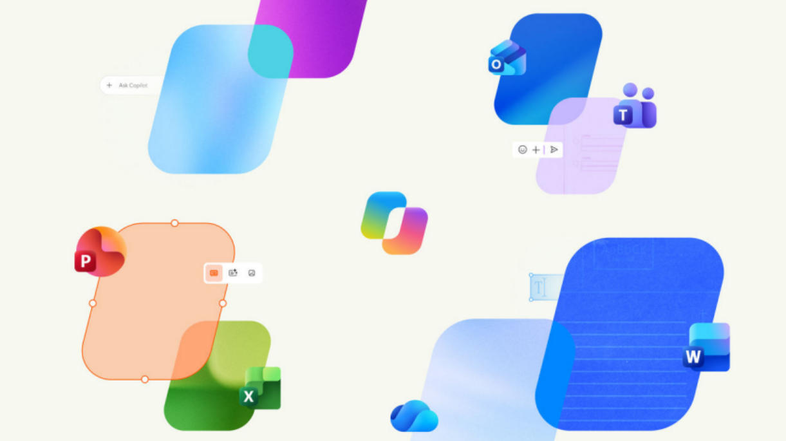
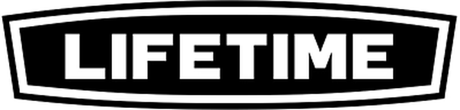

| Manufacturing & Mobility edition · Week of November 23, 2026 |
 |
 | | The Brief |
Manufacturing & Mobility edition
Copilot reads your ERP, and a guided path off SAP ECC
|
|
3½-min read · 758 words Morning. Microsoft shipped a lot this week. I kept the part that matters to manufacturing, and it fits in a few minutes. For manufacturing leaders, this week's news brings ERP data into Copilot, a guided move off legacy ERP, and new models for everyday work. |
| |
| | | Which new models just reached Copilot? | | Can planners ask the ERP a question in plain words? | | Is there a lower-risk way off SAP ECC? |
|
|
|
 |
| | Two new OpenAI models arrive in CopilotWhat's new: GPT-6.2 Sol is rolling out in Copilot Chat, Cowork, Copilot Studio and the Office apps; GPT-6.2 Astra in Cowork and Copilot Studio. Both draw only on content each person can already access. | Why it matters for manufacturing: Engineering and operations teams can pick a stronger model for long, multi-step work such as supplier reviews and change reports. |
Source: Microsoft Copilot Blog · Nov 20 |
|
|
| | Ask your ERP a question in plain wordsWhat's new: Dynamics 365 ERP data now joins Work IQ, so people can ask finance and operations questions in Copilot. New business skills, with built-in ones for expense, procurement, commerce and finance, guide agents through tasks. | Why it matters for manufacturing: Buyers and planners can check orders, stock and purchase requisitions in Copilot instead of hunting through ERP screens. |
Source: Microsoft Dynamics 365 Blog · Nov 19 |
|
 |
| | An agent-led path off legacy ERP and CRMWhat's new: Dynamics 365 Activate's CRM experience for Salesforce moves is generally available, and its ERP experience, including SAP ECC discovery, is in private preview. Your team approves every decision. | Why it matters for manufacturing: Plants still on SAP ECC can map how they really use it, from pricing to production scheduling, before they move. |
Source: Microsoft Dynamics 365 Blog · Nov 19 |
|
Customer story |
|  | | 0 manual touches in daily order handling, down from 50–80 |
Order handling runs overnight with no manual touchesLifetime Products uses Copilot Studio, Dynamics 365 and Power Automate to close retail orders overnight. Daily order handling fell from 50–80 manual touches to zero, and 45 employees moved into new roles. |
|
| | One move for Operations · Manufacturing Get the top 5 issues from last week's shift logsShift notes are full of signals nobody has time to read. Ask Copilot for the pattern, then decide who fixes what. Copy this prompt I've attached last week's shift logs for Line 2. Summarize the top 5 issues by downtime, the likely root cause of each, and who should own the fix. Format it as a table I can share in Monday's huddle. |
Where it works: Works in Copilot Chat: paste or attach your file. Why it works: it gives Copilot a goal, context, details and the data to use. New in Copilot: Look for three tabs in the Copilot app: Chat for quick questions and drafts, Cowork for longer work you hand off, and Code for building small tools. A Work IQ switch decides whether answers use your work data or only the web. |
|
| | Upcoming events |
Convergence 2026
Dec 8–11, 2026 · Miami Beach, FL
Dynamics 365 and agent sessions from the teams that build them. |
| |
|
|
| | 1 for the road Scaling Copilot? Know the number first. Admins can set Copilot Credit spending limits by user, group or tenant, add budget alerts and track usage in one place in the Microsoft 365 admin center. |
|
Forwarding this? Keep me on the Cc and I'll add them to next week's list. We never add anyone who hasn't asked. |
|
How this Brief was made
A small team of AI agents in Microsoft 365 Copilot Cowork found this week's public updates, wrote each story once and tailored them for manufacturing. A person reviews every issue before it is sent. |
|
All information is publicly available from Microsoft. All information is publicly available from Microsoft. You're receiving this because you opted in with your work email.
Manage preferences · Unsubscribe (reply STOP) · Privacy
Made with Microsoft Copilot Cowork + Power Platform
Curated by Nick Fratello, Microsoft · Connect on LinkedIn
Microsoft Corporation, One Microsoft Way, Redmond, WA 98052 |
|